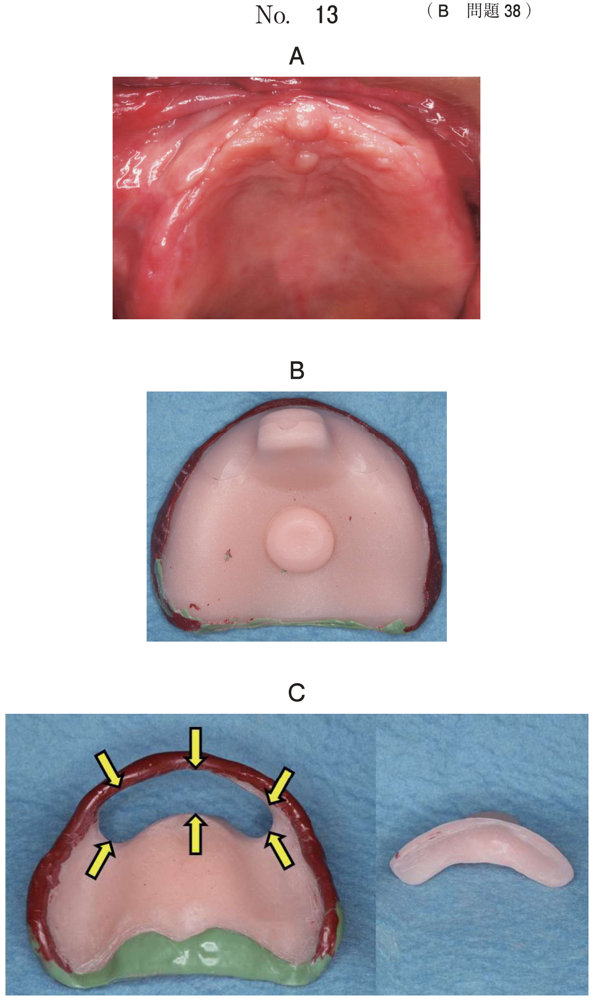

顎運動の異常
開口障害の分類
| 分類 | 疼痛 | 原因疾患 |
|---|---|---|
| 筋性開口障害 | あり（咬筋・側頭筋の圧痛） | 顎関節症I型、咀嚼筋腱・腱膜過形成症、炎症の波及（蜂窩織炎など） |
| 関節性開口障害 | あり/なし | 顎関節症IIIb型（非復位性円板障害）、顎関節強直症、関節突起骨折 |
| 骨性開口障害 | なし | 顎関節強直症（骨性）、筋突起過長症 |
| 瘢痕性開口障害 | なし | 放射線治療後、口腔癌術後、熱傷後 |
筋性開口障害の疼痛好発部位
- 咬筋：最も頻度が高い
- 側頭筋
※閉口筋（咬筋・側頭筋・内側翼突筋）の過緊張・スパスムが原因。顎舌骨筋（開口筋）や胸鎖乳突筋は開口障害の原因にならない。
開口障害をきたす疾患
筋突起過長症・咀嚼筋腱腱膜過形成症
| 筋突起過長症 | 咀嚼筋腱・腱膜過形成症 | |
|---|---|---|
| 病態 | 筋突起が過長で頬骨弓と干渉 | 咀嚼筋の腱・腱膜が過形成 |
| 開口障害 | 無痛性 | 無痛性（開口制限） |
| 特徴的所見 | CTで筋突起の過長を確認 | 下顎角部の肥大 |
| 治療 | 筋突起切除術 | 筋突起切除術 |
| 鑑別 | 顎関節症や顎関節強直症との鑑別が必要 | |
顎関節強直症
- 原因：炎症（関節リウマチなど）、感染、外傷
- 線維性と骨性がある
- 疼痛を伴わない強度の開口障害
- 幼少期に発症 → 顎骨の成長発育が障害 → 小下顎症、鳥貌
- 治療：顎関節授動術（＋開口訓練）
開咬を呈する疾患
- 進行性（特発性）下顎頭吸収（PCR/ICR）：下顎頭の吸収→下顎枝高径の短縮→著しい開咬・小下顎
- 両側関節突起骨折：両側の下顎枝高径が低下→前歯部開咬
- リウマチ性顎関節炎（進行例）：下顎頭吸収→前歯部開咬
開口障害の原因疾患まとめ
| 疾患 | 開口障害 | 疼痛 |
|---|---|---|
| 顎関節症IIIb型 | ○（急性期） | あり |
| 顎関節強直症 | ◎（強度） | なし |
| 筋突起過長症 | ○ | なし |
| 咀嚼筋腱・腱膜過形成症 | ○ | なし |
| 急性顎骨骨髄炎 | ○（炎症の波及） | あり |
| 蜂窩織炎（咬筋隙・翼突下顎隙） | ○（炎症の波及） | あり |
過去問
筋性開口障害における疼痛好発部位はどれか。2つ選べ。
b 側頭筋
c 顎舌骨筋
d 胸鎖乳突筋
e 顎二腹筋前腹
【解説】筋性開口障害は閉口筋の過緊張が原因。疼痛好発部位は咬筋と側頭筋（いずれも閉口筋）。顎舌骨筋・顎二腹筋前腹は開口筋であり開口障害の原因にならない。胸鎖乳突筋は咀嚼筋ではない。
開口障害の原因となるのはどれか。2つ選べ。
b 歯肉膿瘍
c 萌出嚢胞
d 急性顎骨骨髄炎
e 急性化膿性歯髄炎
【解説】急性顎骨骨髄炎は炎症が咀嚼筋間隙に波及し開口障害を起こす。口角炎は口角部の炎症・疼痛により大開口が制限される。歯肉膿瘍・萌出嚢胞は限局性で開口障害を起こさない。歯髄炎は歯の内部の炎症で開口障害とは無関係。
咀嚼筋腱・腱膜過形成症の特徴的な所見はどれか。2つ選べ。
b クリック
c 下顎の偏位
d 下顎角部の肥大
e 顎関節部の圧痛
【解説】咀嚼筋腱・腱膜過形成症は咀嚼筋（特に咬筋・側頭筋）の腱・腱膜が過形成する疾患。特徴は開口制限（無痛性）と下顎角部の肥大。クリックは顎関節症IIIa型、顎関節部の圧痛は顎関節症の症状であり本症には見られない。
9歳の男児。開口障害を主訴として来院した。4年前から口が開きにくいことに気付いていたがそのままにしていたところ、3日前にかかりつけ歯科医で精査を勧められたという。開口量は15mmで、開口時に疼痛はない。初診時のエックス線画像（別冊No.19A）、CT（別冊No.19B）及び3D-CT（別冊No.19C）を別に示す。
原因として考えられるのはどれか。1つ選べ。



b 下顎頭の骨折
c 下顎頭の腫腸
d 筋突起の過長
e 顎関節の骨性癒着
【解説】9歳男児、4年前からの慢性的な開口障害で疼痛なし。CT・3D-CTで筋突起の過長が確認できる。筋突起が頬骨弓と干渉して開口が制限される。顎関節強直症との鑑別が重要だが、画像で関節部に異常がなく筋突起が大きい場合は筋突起過長症。
前歯部開咬を呈するのはどれか。2つ選べ。
b 茎状突起過長症
c 痛風性顎関節炎
d 進行性下顎頭吸収
e 両側関節突起骨折
【解説】進行性下顎頭吸収は下顎頭が吸収され下顎枝高径が短縮→著しい開咬と小下顎を呈する。両側関節突起骨折も両側の下顎枝高径が低下し前歯部開咬となる。顎放線菌症・茎状突起過長症・痛風性顎関節炎は開咬を呈さない。
70歳の女性。左側顎関節の運動痛を主訴として来院した。開口時に顎関節雑音を認めるという。開口制限は認めない。顎関節の歯科用コーンビームCT（別冊No.25）を別に示す。
処置として適切なのはどれか。2つ選べ。

b NSAIDs投与
c スプリント装着
d マニピュレーション
e 顎関節鏡視下剥離授動術
【解説】運動痛＋顎関節雑音（クレピタス）＋開口制限なし→IV型（変形性顎関節症）の可能性。CBCTで下顎頭の形態変化が確認できる。治療は保存療法から開始：NSAIDs投与（疼痛管理）とスプリント装着（顎関節への負担軽減）。ストレッチは筋性障害向け。マニピュレーションはIII型向け。
42歳の男性。開口時の疼痛を主訴として来院した。昨夜食事時に左側耳珠前方に激痛が生じ、以後開口時に痛みがあるという。同部に圧痛を認める。開口度は15mmである。エックス線写真では下顎の運動制限の他に異常を認めない。初診時のMRI（別冊No.50）を別に示す。

問52：左側顎関節部のMRIで観察できるのはどれか。1つ選べ。
問53：適切な対応はどれか。1つ選べ。
b 抗菌薬の投与
c 顎運動制限の指導
d Hippocrates法による整復
e 関節円板のマニピュレーション
【解説】急性期の非復位性関節円板前方転位（IIIb型）。MRIで関節円板の前方転位を確認。急性期の対応として顎運動制限の指導（安静）が適切。Hippocrates法は顎関節脱臼の整復法であり不適切。